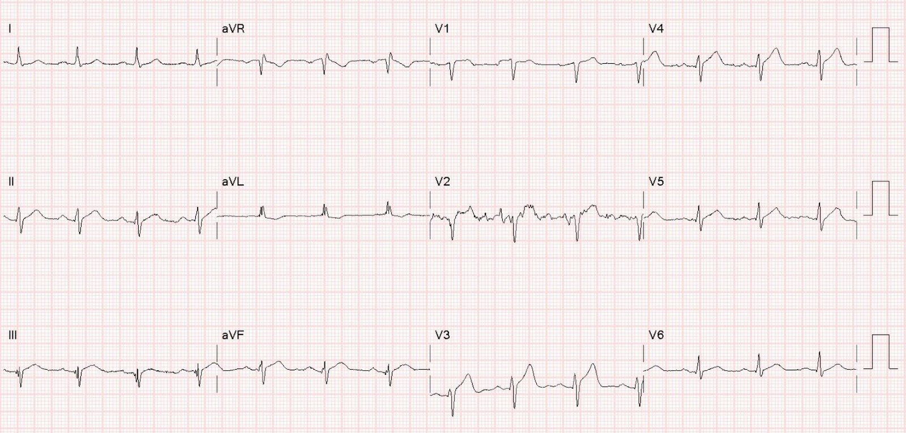
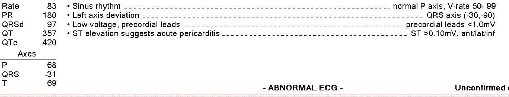
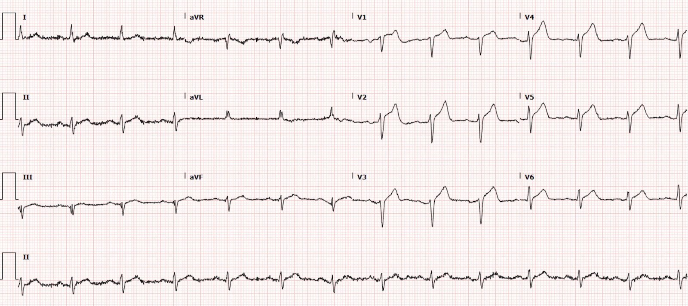
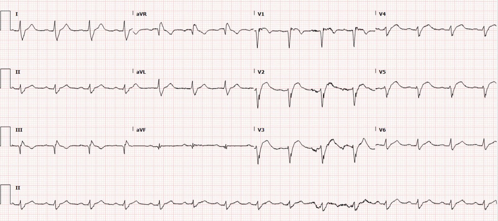
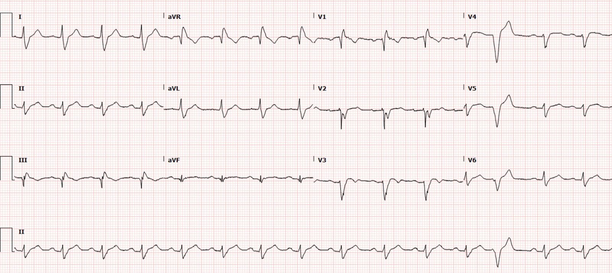
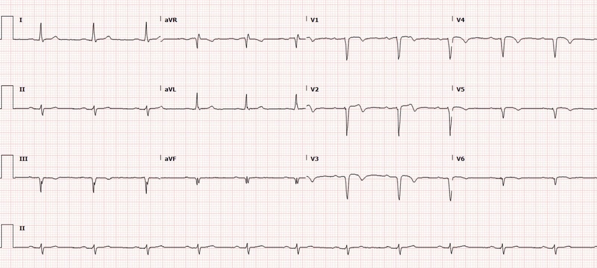
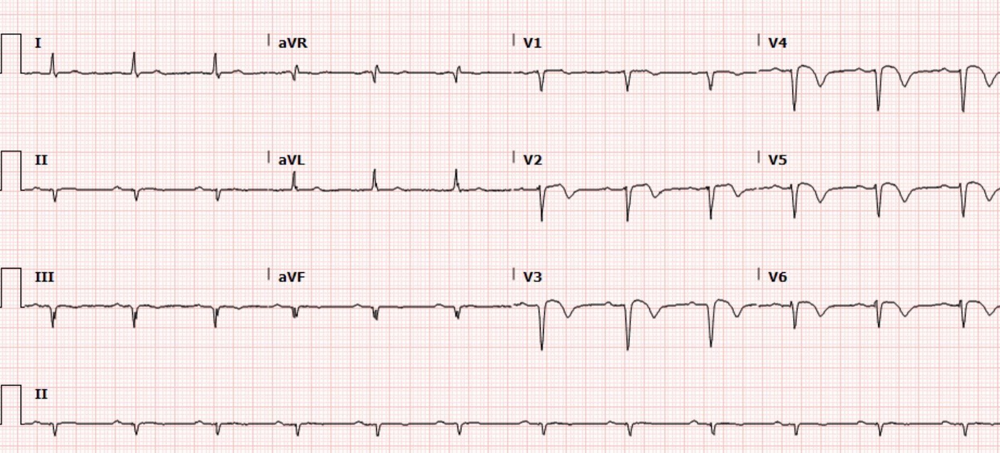
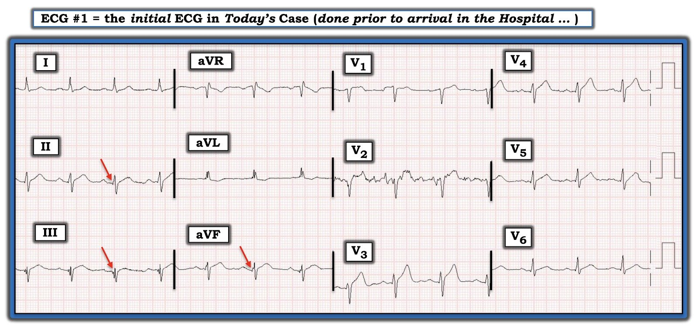

12/02/2022 — Một người đàn ông 50 mấy tuổi với “không có ST chênh xuống soi gương” và ST chênh lên “lan tỏa”. Lan tỏa thực ra nghĩa là gì?
Bản dịch tiếng Việt của bài "A man in his 50s with “no reciprocal ST depression” and “diffuse” ST elevation. What does diffuse actually mean?" – Dr. Smith’s ECG Blog. Giữ nguyên toàn bộ 10 hình ảnh của bản gốc.
Tác giả: Pendell Meyers
Đội cấp cứu ngoài viện (EMS) gọi đến khi tôi đang trực và nhờ tôi xem một điện tâm đồ của một người đàn ông 50 mấy tuổi bị đau ngực cấp và khó thở, khởi phát khoảng 45 phút trước khi đến viện.
Đây là điện tâm đồ đó:


Chúng tôi đã kích hoạt phòng thông tim (cath lab) vì điện tâm đồ này có giá trị chẩn đoán OMI do LAD. Có nhịp xoang với phức bộ QRS bình thường, ngoại trừ tăng tiến sóng R hơi chậm chạp (điều này là do OMI LAD cấp, làm giảm điện thế sóng R trong vùng chi phối của nó). Chúng tôi thấy ST chênh lên (STE) ở V2-V4, và một chút gợi ý STE ở II, III và aVF. Có sóng T tối cấp (hyperacute) ở V2-V4, và ở II, III, aVF. Sóng T ở V5 và V6 cũng có thể đã tăng kích thước và diện tích so với nền, nhưng không có điện tâm đồ nền để so sánh.
Có một chút ST chênh xuống (STD) soi gương ở aVL (soi gương với chuyển đạo III), cũng như một sóng T âm soi gương, không phù hợp với QRS ở chuyển đạo đó.
Điều này có giá trị chẩn đoán nhồi máu xuyên thành cấp ở các vùng trước, bên và mỏm của thất trái. Nguyên nhân thường gặp nhất, quan trọng nhất và có thể điều trị được dĩ nhiên phải là OMI cho đến khi chụp mạch vành cấp cứu chứng minh điều ngược lại.
Các dấu hiệu OMI hoàn toàn không lan tỏa, mà khu trú đúng vào các vùng liệt kê ở trên. Các chuyển đạo phía sau, nếu được ghi, nhiều khả năng sẽ cho thấy STD soi gương. (Hoặc có thể vùng đó ở quá xa và có quá nhiều mô phổi xen giữa nên không ghi nhận được STD soi gương nào)
Ba người thầy thuốc không đồng ý và nhất trí cho rằng “không có dấu hiệu soi gương”, và một trong số họ đồng tình với kết quả đọc bằng máy tính như dưới đây:


Trước hết, và quan trọng nhất: ST chênh lên ở thành trước, bên và dưới vẫn có khả năng là OMI cao hơn rất nhiều so với viêm màng ngoài tim. Viêm màng ngoài tim thì hiếm; OMI thì thường gặp. Và vì lý do này, “chẩn đoán viêm màng ngoài tim thì bạn tự chịu rủi ro.”
Hãy xem máy tính liệt kê các tiêu chuẩn khiến nó chẩn đoán viêm màng ngoài tim: “ST >0.10 mV, ant/lat/inf” (trước/bên/dưới). Máy tính, giống như phần lớn thầy thuốc được đào tạo điện tâm đồ ở mức trung bình, được lập trình đúng theo nghĩa đen để nói rằng bất kỳ dấu hiệu điện tâm đồ nào có mặt ở các chuyển đạo trước, bên và dưới đều là “lan tỏa.”
Lan tỏa hàm ý rằng dấu hiệu đó có mặt ở tất cả các thành của thất trái, nghĩa là nó phải bao gồm ít nhất tất cả các vùng sau đây của thất trái: trước, bên, sau và dưới.
Trên điện tâm đồ 12 chuyển đạo chuẩn này, KHÔNG có ST chênh lên lan tỏa. Thực tế, có ST chênh xuống soi gương ở aVL! Bischof và Smith đã chứng minh rằng điều này không xảy ra trong viêm màng ngoài tim, và xảy ra gần như ở mọi trường hợp OMI thành dưới. https://www.sciencedirect.com/science/article/abs/pii/S0735675715008189 (ST chênh xuống soi gương ở aVL giúp phân biệt nhồi máu thành dưới với viêm màng ngoài tim)
Hơn nữa, điện tâm đồ 12 chuyển đạo chuẩn KHÔNG ghi các chuyển đạo phía sau. Vì vậy, không thể xác định một dấu hiệu có lan tỏa hay không trên điện tâm đồ 12 chuyển đạo chuẩn, vì chúng ta không có các chuyển đạo phía sau. Nếu một bệnh nhân có STE cấp ở V1-V6, I, aVL, II/III/aVF và V7-9, thì tôi cho rằng khi đó mới thực sự có thể mô tả là lan tỏa, vì nó có mặt ở tất cả các thành chính của thất trái.
Poh và cs. đã chứng minh rằng STD lan tỏa của thiếu máu cục bộ dưới nội tâm mạc gây STD ở tất cả các thành; do đó, hợp lý khi suy ra rằng STE lan tỏa của viêm màng ngoài tim (nếu viêm màng ngoài tim/viêm cơ tim là lan tỏa chứ không khu trú, như thường thấy) sẽ gây STE lan tỏa ở tất cả các thành. Poh K-K, Chia B-L, Tan H-C, Yeo T-C, Lim Y-T. Absence of ST elevation in ECG leads V7, V8, V9 in ischaemia of non-occlusive aetiologies (Không có ST chênh lên ở các chuyển đạo V7, V8, V9 trong thiếu máu cục bộ do nguyên nhân không tắc mạch). Int J Cardiol [Internet] 2004;97(3):389–92. Truy cập tại: http://dx.doi.org/10.1016/j.ijcard.2003.10.022
Một vấn đề quan trọng là việc giảng dạy điện tâm đồ thông thường không bao gồm các điểm then chốt sau đây:
1) Nhiều OMI LAD STEMI(+) rõ ràng không hề có ST chênh xuống soi gương nào.
2) Nhiều OMI LAD gây STE và sóng T tối cấp ở các chuyển đạo dưới, điều thường được cho là do tổn thương vùng mỏm thất trái được ghi nhận ở các chuyển đạo dưới. LAD cũng có thể cấp máu cho một phần vách dưới, vốn là một phần của thành dưới, nơi vùng chi phối của LAD gặp vùng chi phối của RCA.
3) Ngay cả ở những OMI LAD thực sự gây dấu hiệu OMI ở các chuyển đạo trước, bên và dưới, thì theo định nghĩa đó KHÔNG phải là “LAN TỎA” trừ khi bạn chứng minh được rằng các dấu hiệu đó cũng có mặt ở các chuyển đạo phía sau.
4) Viêm màng ngoài tim (không kèm viêm cơ tim, tràn dịch, v.v.) là một chẩn đoán gần như vô ích khi đưa ra, và cực kỳ rủi ro khi đưa ra trong lúc hội chứng vành cấp (ACS) và OMI là một nguyên nhân thay thế có thể giải thích triệu chứng của bệnh nhân.
Vấn đề này lại là thêm một cách mà thành sau bị đối xử như thể nó không tồn tại. OMI thành sau nằm trong số những OMI bị bỏ sót nhiều nhất, và thành sau dường như không được tính đến trong cách giảng dạy thông thường về “dấu hiệu điện tâm đồ lan tỏa.”
Khi bệnh nhân đến khoa cấp cứu (ED), ông trông cực kỳ nặng, cực kỳ khó chịu, xanh tái, vã mồ hôi, và tôi lo rằng ông sẽ bị sốc tim hoặc ngừng tim do rung thất (VF) trước khi tôi kịp thuyết phục được khoa tim mạch.
Đây là điện tâm đồ đầu tiên của ông tại khoa cấp cứu:


Họ lại một lần nữa tỏ ra bối rối vì “không có ST chênh xuống soi gương,” nhưng họ đồng ý rằng bệnh cảnh, triệu chứng và vẻ ngoài của bệnh nhân rất gợi ý nhồi máu cơ tim cấp.
Họ tiến hành đưa bệnh nhân vào phòng thông tim, nơi một chỗ tắc hoàn toàn do huyết khối ở LAD đoạn giữa được tái thông và đặt stent với kết quả chụp mạch rất tốt.
Sau khi bệnh nhân đã vào phòng thông tim, kết quả troponin I độ nhạy cao đầu tiên tại khoa cấp cứu mới trả về và chỉ là 9 ng/L! (bình thường ở nam <20ng/L với xét nghiệm này). Nhưng điều này không có gì bất thường: High-Sensitivity Cardiac Troponin Concentrations at Presentation in Patients With ST-Segment Elevation Myocardial Infarction (Nồng độ troponin tim độ nhạy cao lúc nhập viện ở bệnh nhân nhồi máu cơ tim ST chênh lên)
Tất cả các lần troponin sau đó đều trả về ＞25,000 ng/L.
Siêu âm tim chính thức cho thấy EF 40%, với giảm động cơ tim vùng trước vách, thành trước, vách dưới và mỏm.
Như đã mô tả, rối loạn vận động thành này KHÔNG lan tỏa.
Đây là các điện tâm đồ liên tiếp của ông sau thông tim và trong 48 giờ tiếp theo, cho thấy một hình ảnh RBBB thoáng qua (nhiều khả năng do choáng nhánh phải, vốn dĩ nhiên nằm ở phần trước của vách liên thất).








Từ các điện tâm đồ liên tiếp, bạn có thể thấy một vùng lớn thuộc vùng trước bên đã bị mất hoặc bị choáng, nhưng các sóng T tái tưới máu ngày càng sâu ở các chuyển đạo đó gợi ý rằng cũng có một lượng đáng kể cơ tim hy vọng đang trải qua quá trình tái tưới máu.
Những điểm cần học:
Nhiều OMI LAD không có dấu hiệu soi gương rõ rệt trên điện tâm đồ 12 chuyển đạo chuẩn, vì chúng có thể có STE và sóng T tối cấp ở các chuyển đạo dưới. Ca bệnh trên đã được đọc là không có thay đổi soi gương, nhưng thực tế có STD và sóng T đảo ngược (TWI) soi gương ở aVL.
Troponin có thể bình thường, ngay cả với xét nghiệm độ nhạy cao, trong vài giờ đầu của triệu chứng. Đây chính là lúc lợi ích của tái tưới máu cấp cứu là lớn nhất!
Theo ý kiến của tôi, không nên dùng thuật ngữ “lan tỏa” trừ khi bạn đã xác nhận rằng dấu hiệu điện tâm đồ thực sự có mặt ở tất cả các thành chính của thất trái: trước, bên, sau và dưới. Các chuyển đạo trước + bên + dưới vẫn có thể là khá khu trú – vào vùng của LAD. Và một tắc thân chung động mạch vành trái có thể ảnh hưởng tất cả các thành (dù những bệnh nhân này thường không đến được khoa cấp cứu khi còn sống).

===================================
BÌNH LUẬN CỦA TÔI, bởi KEN GRAUER, MD (9/2/2022):
===================================
Bài viết xuất sắc của Dr. Meyers — với một loạt 6 bản ghi liên tiếp đầy sâu sắc, làm nổi bật sự tiến triển của ổ nhồi máu rộng trong ca hôm nay. Vì mục đích thảo luận học thuật — tôi sẽ đóng vai “người phản biện (Devil’s Advocate)” một chút — bằng một bình luận ngắn để bênh vực thuật ngữ “lan tỏa” — thuật ngữ mà tôi thích và dùng trong một số trường hợp chọn lọc.
Tôi xin nhấn mạnh rằng cách tôi dùng thuật ngữ “lan tỏa” — theo tôi là khác với cách dùng có vấn đề mà Dr. Meyers đã mô tả.
- Thứ nhất, thuật ngữ “lan tỏa” áp dụng cho ST chênh lên theo định nghĩa của Dr. Meyers (theo như tôi hiểu) — nên được dành cho số ít trường hợp biểu hiện ST chênh lên ở các chuyển đạo trước, bên, dưới và sau. Nhưng điều này có thể tạo ra một tình huống khó (nếu không nói là không thể) thỏa mãn — vì ST “chênh lên” đồng thời ở các chuyển đạo trước và sau có thể dẫn đến sự giảm bớt (nếu không nói là triệt tiêu) các lực điện, vì nhồi máu thành sau cấp biểu hiện bằng ST chênh xuống ở các chuyển đạo trước.
- Do đó — tôi dành thuật ngữ “lan tỏa” làm từ mô tả cho các thay đổi ST-T toàn thể ở hầu như tất cả các chuyển đạo trừ aVR (và đôi khi, chuyển đạo V1). Cách khác mà tôi dùng thuật ngữ “lan tỏa”, khác với nhiều thầy thuốc khác theo tôi nghĩ — là tôi chỉ dùng từ này khi các thay đổi mà tôi đang mô tả (tức là, dù đó là ST chênh lên, ST chênh xuống, hay ST dẹt “lan tỏa”) — chỉ dùng khi các thay đổi ST-T này trông rất giống nhau ở ít nhất 8-9 chuyển đạo. Đây không phải là điều chúng ta thấy ở điện tâm đồ thứ 1 trong ca hôm nay (để cho rõ, tôi đã vẽ lại điện tâm đồ này trong Hình 1).
- T.B. (P.S.): Mức độ ST chênh lên hoặc chênh xuống ở một vùng giải phẫu của tim làm giảm bớt (hoặc triệt tiêu) đáp ứng đoạn ST ngược chiều ở vùng đối diện của tim đến đâu là điều khó dự đoán, do có hàng loạt biến số (bao gồm động mạch vành nào khác bị tổn thương, bao nhiêu nhánh, và tổn thương nặng đến mức nào).


LƯU Ý: Tôi hoàn toàn đồng ý với Dr. Meyers rằng điện tâm đồ đầu tiên trong ca hôm nay ( = Hình 1) ở bệnh nhân đau ngực mới khởi phát này — có giá trị chẩn đoán một OMI cấp cần thông tim kịp thời. Tôi cũng đồng ý với Dr. Meyers rằng các thay đổi ST-T thấy trên bản ghi này không “lan tỏa” vì:
- 2 trong 12 chuyển đạo cho thấy dấu hiệu cấp tính rõ rệt hơn nhiều so với 10 chuyển đạo còn lại (tức là, ST chênh lên đáng kể kèm sóng T tối cấp “đồ sộ” ở các chuyển đạo V3 và V4, cao hơn hẳn sóng R ở từng chuyển đạo tương ứng).
- Có quá nhiều nhiễu ở chuyển đạo V2 để xác định đoạn ST ở chuyển đạo này đang thế nào.
- 3 đoạn ST của 3 nhát bóp thấy ở chuyển đạo V1 đều trông khác nhau — nên tôi HOÀN TOÀN KHÔNG biết đoạn ST “thực sự” ở chuyển đạo V1 trông như thế nào.
- Các chuyển đạo V5 và V6 rõ ràng cũng có thể là tối cấp — nhưng mức ST chênh lên ở các chuyển đạo này cùng lắm chỉ ở mức vừa phải — và chiều cao sóng T ở các chuyển đạo này, so với sóng R, tăng không ấn tượng bằng sóng T ở các chuyển đạo V3 và V4.
Ở các chuyển đạo chi:
- Có các sóng Q kín đáo nhưng có thật với khía ở phần đầu ở mỗi chuyển đạo dưới, gợi ý mạnh đến nhồi máu ở một thời điểm nào đó (các mũi tên ĐỎ trong Hình 1). Nhưng khi không có điện tâm đồ nền để so sánh — tôi không tin chắc rằng các sóng Q thành dưới này là “mới” (tức là, có lẽ bệnh nhân này đã từng bị nhồi máu cơ tim thành dưới trước đó).
- Đúng là — đoạn ST ở mỗi chuyển đạo dưới biểu hiện đoạn khởi đầu “thẳng” (nếu không nói là có gợi ý ST chênh lên kèm ST dạng vòm) — và — sóng T đảo ngược nông ở chuyển đạo aVL rõ ràng là hình soi gương của ST-T ở chuyển đạo III. Nhưng các thay đổi này tương đối khiêm tốn so với hình ảnh điện tâm đồ ở các chuyển đạo V3 và V4.
- Cuối cùng — tôi không thấy gì “cấp tính” ở ST-T của chuyển đạo I.
KẾT LUẬN: Tôi hoàn toàn đồng ý với Dr. Meyers rằng các thay đổi ST-T trên điện tâm đồ đầu tiên này, trình bày ở Hình 1, chắc chắn không “lan tỏa”.
- “Vẻ đẹp” của y học — là thường có nhiều hơn một câu trả lời hay cách tiếp cận phù hợp cho bất kỳ tình huống lâm sàng nào. Do đó — tôi chọn tiếp tục dùng thuật ngữ “lan tỏa” cho những tình huống chọn lọc mà tôi đã mô tả ở trên.